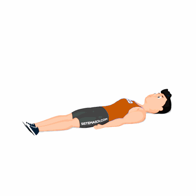

Double Leg Stretch

O exercício tem como objetivo trabalhar os músculos do abdômen, porém também tem benefícios como aumento da flexibilidade e coordenação do corpo inteiro.
Ficha Técnica
Tipo: Pilates
Grupo Muscular: Abdome
Aparelho: Nenhum
Músculos: Nenhum
Como realizar
- Deitado de costas no chão, é preciso que encolha as pernas, posicionando as mãos sob os tornozelos e os joelhos sob o seu peito;
- Enquanto inspira e expira o ar, estenda as pernas em um ângulo aberto, de aproximadamente
- 1
- 10°;
- Mantenha os braços paralelos ao seu tronco, porém, sem encostá-los no chão. A cabeça também não deve tocar o chão, mas sim estar um pouco elevada;
- Terminando o movimento, expire o ar, recolhendo as pernas de volta à posição anterior, com os joelhos sob o peito e as mãos no tornozelo, como se estivesse abraçando as suas pernas.
 RC STORE
RC STORE